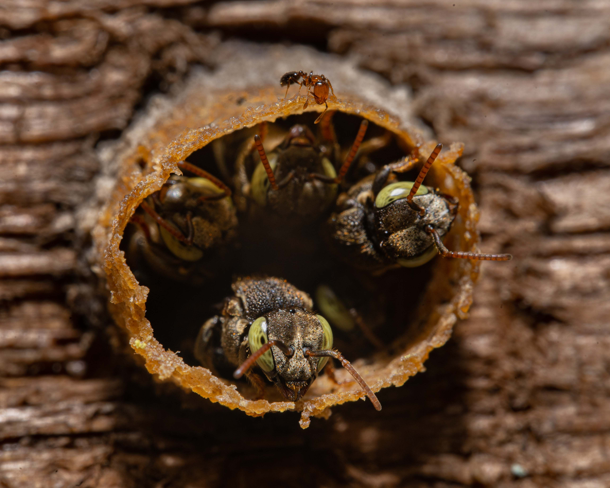
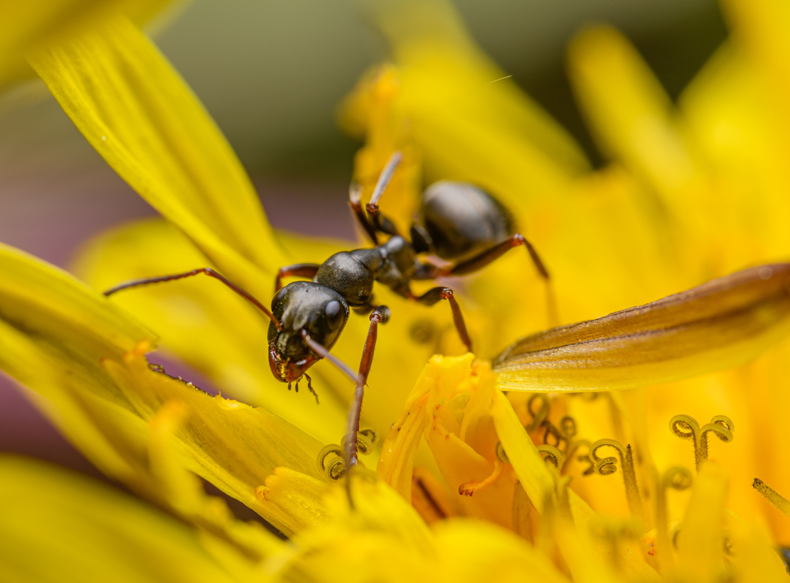
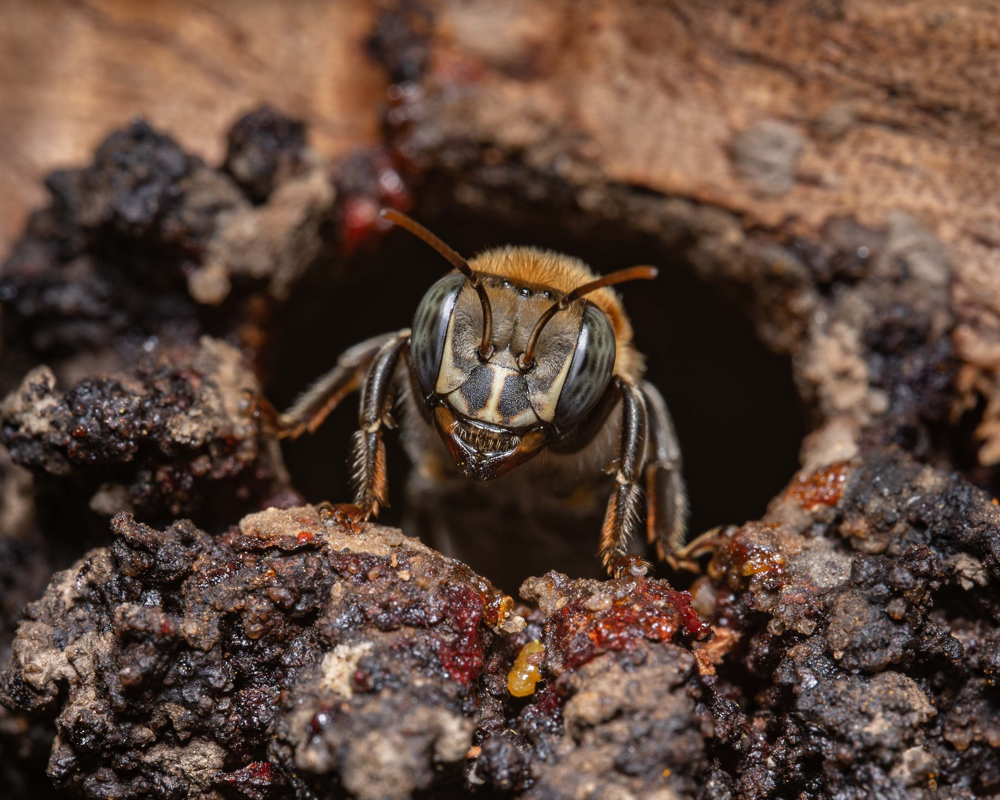

Nossas Linhas de Pesquisa

Construção de mitogenomas a partir de dados de transcriptoma
Montagem e anotação de genomas mitocondriais de formigas da tribo Attini, cortadeiras e não-cortadeiras, com base em dados de RNA, com foco em espécies não modelo.

Expressão diferencial de genes em abelhas sem ferrão expostas a pesticidas
Estudo do impacto molecular causado por agrotóxicos em abelhas nativas, com foco na resposta imune, detoxificação e alterações comportamentais.
Microbiota do papo melífero e intestino de abelhas sem ferrão
Análise comparativa da diversidade e função de comunidades microbianas associadas ao trato digestivo de diferentes espécies de abelhas.

Metagenômica e Bioinformática
Aplicação de pipelines bioinformáticos e bancos de dados para a análise de sequências ômicas em comunidades complexas e ambientes diversos.
Interações entre abelhas e microrganismos
Exploração das relações simbióticas entre abelhas e microrganismos, abordando implicações ecológicas, evolutivas e aplicadas.